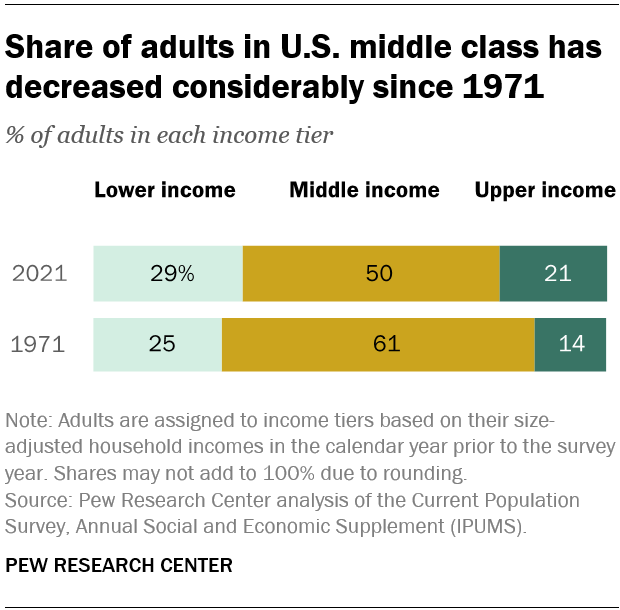

In my last miscellaneous reflections post, I concluded by noting that although inequality is growing around the world and in the US, nonetheless, capitalism has raised billions of people out of extreme poverty during the last two centuries. After the post, I began to wonder what other trends relate to inequality, and I did some research. Here are some graphs that show the middle class, inequality, workers’ wages, and the Consumer Price Index since 1970.
Since the neoliberal trend that began in the 1970s, the middle class has shrunk by 11%, inequality has grown, the CPI has increased more than 20%, and wages have stagnated; at the same time, more people have become wealthy and the costs of computers, phones, and televisions have declined. The lower and middle classes, therefore, have a more difficult time, but information and technology have become more accessible for education; nonetheless, a person is increasingly less likely to earn more than their parents. And the price of education has increased: In 1980, the average cost of a four year college was about $10,000 a year, and by 2020 it was $28,000 a year: a 180% increase in the cost of education which is the key to a well paying job. Despite the cost, there is an increasing number of students attending college every year, with students from low-income families making a substantial portion of the new attendees.
The economists Joseph Stiglitz and Paul Krugman, and also the Council on Foreign Relations, agree that inequality results in lower economic growth because the wealthy are less likely to use the money in the economy and the poor are poorly educated and trained.
The lifestyle of the poor and middle classes is worse than the wealthy. One study found more than a ten year life expectancy difference between the top 1% and the bottom 1%. Other studies have found a difference in violence in wealthy and poor neighborhoods. And still other studies have found a proportional correlation between wealth and happiness.
The research into wealth inequality among Americans also made me interested in national wealth inequality globally. NPR recently ran a story about why some nations are poor. The answer the article suggested is that poorer nations have less developed institutions. The elite of poorer countries claim disproportionate amounts of wealth which disincentivizes the impoverished to work. Then despite international investment and foreign aid, the countries with less developed institutions remain poor. Other theories of underdevelopment include dependency theory and geographic advantages, but all agree that the institutions of poorer nations are less developed also.
The United Nations lists 46 least developed countries (LDC). Most of them are in sub Saharan African and in south and southeast Asia. The criteria for inclusion in the list is a gross national income per capita of $1,018. There are two other indices the UN uses to designate countries on the list: a human assets index and an economic and environment vulnerability index. The UN reports that since 1994 six countries have graduated from the LDC list.
The nuance that I gained from this research is that from the perspective of middle and lower class people, and from the perspective of a member of the national economy as a whole, there is a strong argument in favor of the government stopping the tendency of capitalism to grow inequality. Not only is inequality growing, but the wages of the middle classes are stagnating while the costs of living are increasing, especially for higher education. Unfortunately, middle class Republicans vote for social more than for economic issues, or if they vote for economic issues, then they are against a progressive tax on principle even though it would help their class interests. So, probably the trends of inequality in America will continue even if the they slow economic growth.